KNU-EE-UB
납땜 가이드
처음 인두를 잡는 사람부터 활용하는 사람까지 사용하는 실습 자료. 왜 되고 왜 안 되는지 직관적으로 이해합니다.
시작하기 전에 — 안전 수칙
- 작업 후에는 손을 씻으세요. 유연납에는 납이 들어있는데, 손에 묻은 납이 입으로 들어가는 경우만 조심하면 됩니다. 납땜하면서 음식을 집어먹지 말고, 끝나면 손을 씻으면 충분합니다. (호흡이나 피부로는 거의 흡수되지 않으니 과하게 걱정할 필요는 없습니다.)
- 환기를 하세요. 납땜 연기는 납 증기가 아니라 플럭스가 타면서 나오는 흄인데, 호흡기에 자극이 될 수 있으니 창문을 열거나 팬을 틀어두면 좋습니다.
- 화상 주의. 인두팁은 매우 뜨겁습니다. 사용하지 않을 때는 반드시 거치대에 올려두세요.
저항 다리(리드)나 전선은 매우 뜨거워지고 잘 식지 않습니다. 납땜 직후 이 부분을 맨손으로 만지면 화상 위험이 있으니 주의하세요. (반대로 납은 금방 식습니다 — 자세한 내용은 다음 장에서.)
준비물
- 인두기 — 캡스톤실에 구비된 인두기는 온도조절 기능이 없어, 전원을 꽂으면 바로 가열됩니다.
- 납 — 유연납 — 저온에서 납땜이 잘 되고 다루기 쉬워 실습에 적합합니다. (무연납은 납땜이 더 어렵고 인두팁을 빨리 망가뜨려서, 우리는 유연납을 씁니다.)
- 플럭스(납땜보조제) — 금속 표면의 산화막을 제거하고 납이 잘 퍼지도록(젖도록) 돕는 물질입니다. 굵은 전선처럼 납이 속까지 잘 안 스며드는 경우에 특히 유용합니다.
- 롱노즈 — 부품을 잡거나 리드를 구부릴 때 사용합니다.
- 니퍼 — 남은 리드를 잘라낼 때 사용합니다.
- 솔더 윅 — 납을 흡수해 제거하는 도구입니다.
- 납 흡입기(솔더 서커) — 녹은 납을 빨아들여 제거하는 도구입니다.
- 황동 수세미 — 인두팁 청소용. (노란 스펀지를 물에 적셔 쓰는 방법도 있지만, 황동 수세미로 충분해 굳이 쓸 필요 없습니다.)
인두팁 사용 요령
납땜을 시작하기 전에 알아두면 좋은 것들입니다.
- 납은 맨손으로 잡고 하세요. 납선은 인두팁에 닿는 끝부분만 녹고, 손으로 잡은 쪽까지는 열이 올라오지 않아 맨손으로 다뤄도 됩니다. 처음 하는 사람들이 뜨거운 줄 알고 핀셋으로 잡는 경우가 많은데, 오히려 손으로 잡는 게 미세한 조작이 쉽고 정확합니다. (다만 납땜 중 플럭스가 튀면 뜨거울 수 있으니, 원한다면 장갑을 껴도 됩니다. 그래도 맨손으로 하는 게 가장 편합니다.)
- 팁의 뾰족한 끝이 아니라, 살짝 안쪽의 넓은 면(배 부분)으로 납땜하세요. 팁 끝으로 갈수록 열이 부족해 납이 잘 안 녹습니다. "왜 안 녹지?" 싶을 때는 팁 끝만 대고 있는 경우가 많습니다.
- 청소는 황동 수세미로 합니다. 팁에 낀 찌꺼기나 산화물을 문질러 닦아내면 납이 훨씬 잘 붙습니다.
납땜의 두 가지 방법
방법 A — 인두 고정 + 납 밀어넣기 (기본)
인두팁을 납땜할 부위에 가만히 대고, 반대편에서 납을 밀어넣는 방식입니다. 가장 기본이 되고 제일 많이 쓰는 방법입니다.
01-method-a.gif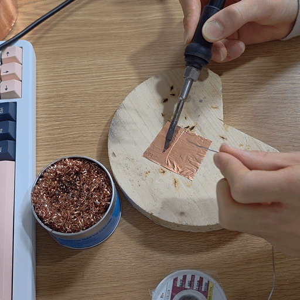
방법 B — 팁에 납 묻혀 가져다 대기 (잘 안 씀)
납을 먼저 인두팁에 묻힌 뒤 부위에 가져다 대는 방식입니다. 인두팁에서는 납이 잘 안 떨어지기 때문에 일반적인 납땜에는 잘 사용하지 않습니다. 다만 떨어진 두 지점을 납으로 이어 전선처럼 만드는 점퍼 배선(솔더 브릿지)을 할 때는 유용합니다. 만약 팁에 납이 전혀 붙지 않는다면 인두기 팁을 교체해야 합니다 — 자세한 방법은 뒤에서 다룹니다.
02-method-b.gif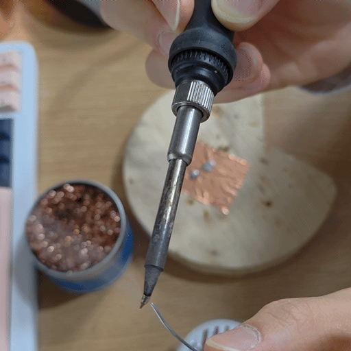
만능기판(PCB) 납땜
PCB에서도 주로 인두를 가만히 대고 납을 움직이는 방식(방법 A)을 씁니다.
캐패시터 납땜
캐패시터를 기판 구멍에 꽂고 기판에 밀착시킨 후, 움직이지 않도록 다리를 바깥으로 접어 고정합니다. 인두팁을 다리에 대고 납을 움직여가며 납땜한 뒤, 남은 긴 다리는 잘라냅니다.
03-capacitor.gif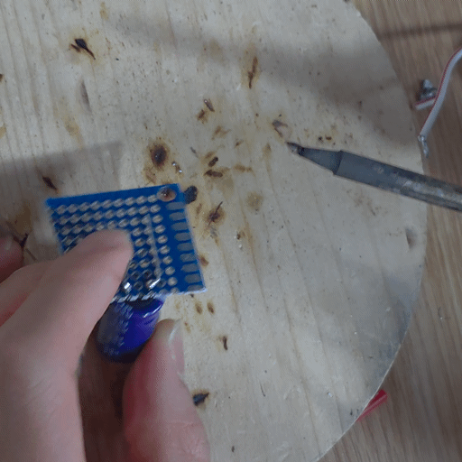
남은 다리를 점퍼선으로 재활용
잘라내기 전에, 남은 긴 다리를 전선처럼 사용해 다른 지점과 이을 수 있습니다. 정말 필요 없는 다리만 잘라냅니다.
04-lead-jumper.gif
저항 납땜 & 흔한 실수
저항을 납땜할 때 일부러 오래, 납을 많이 써서 해봤습니다. 그런데 실제로는 윗면(앞면)에 납이 거의 남지 않고 대부분 뒷면으로 빠져나갔습니다. 납을 많이 쓴다고 잘 되는 게 아니라는 것을 보여주는 예입니다.
05-resistor-fail.gif
리드 재활용 점퍼 배선
남은 저항 다리를 알맞게 잘라, 다른 목표 지점에 납땜해 전선처럼 사용합니다. 이때 납을 인두팁에 묻혀서(방법 B) 두 지점을 잇습니다.
06-resistor-jumper.gif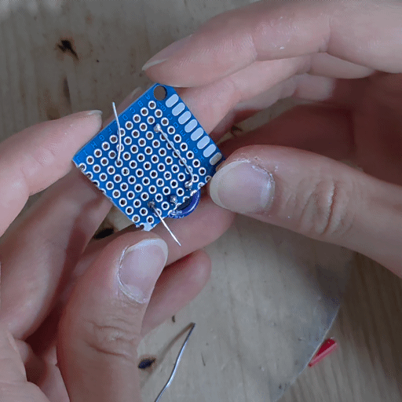
짧은 거리 솔더 브릿지
다리를 실수로 잘라냈는데 전선으로 잇기엔 거리가 짧다면, 납땜만으로 일일이 이어야 합니다. 이때도 납이 뒷면으로 빠지지 않도록:
- 먼저 인두팁에 납을 살짝 묻혀 구멍을 메웁니다.
- 식은 후, 다시 인두팁에 납을 많이 묻혀가며 두 지점을 잇습니다.
07-solder-bridge.gif
잘못된 납땜 제거하는 3가지 방법
① 인두기로 긁어내기
납이 식기를 기다린 후, 인두기로 다시 녹이며 긁어내 제거합니다.
08-remove-scrape.gif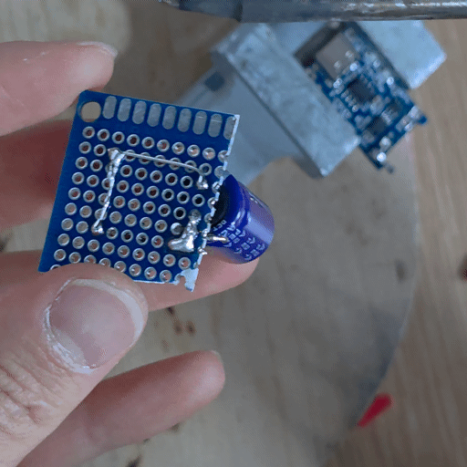
② 납 흡입기(솔더 서커)로 빨아들이기
납을 녹인 상태에서, 공기로 빨아들이는 도구로 제거합니다.
09-remove-sucker.gif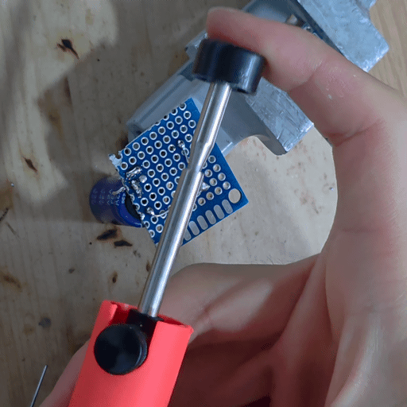
③ 솔더 윅 + 플럭스로 흡수
솔더 윅을 쓸 만큼 자르고, 잘 흡수되도록 넓게 펴줍니다. 플럭스를 묻힌 뒤 납 위에 대고 인두기로 가열하면, 녹은 납이 심지로 빨려 올라가 제거됩니다.
10-remove-wick.gif
핀헤더(숫놈)를 만능기판에 납땜하기
모듈을 사면 핀헤더가 납땜 안 된 채로 오는 경우가 많아, 실전에서 가장 많이 하게 됩니다.
1) 양끝 먼저 가접(임시 고정)
손을 자유롭게 쓰기 위해, 먼저 양끝 핀을 살짝 붙입니다.
- 인두팁에 납을 묻힙니다. (방법 B 응용)
- 한 손으로 기판과 핀헤더를 정중앙에 밀착시켜 고정합니다.
- 납 묻은 인두팁을 양끝 핀에 가져다 댑니다. 팁에서 납이 잘 안 떨어지므로 "가접"이라 생각하고, 좀 오래 대고 있어야 겨우 묻습니다.
너무 오래 대면 핀헤더의 검은 플라스틱이 녹아 핀이 빠질 수 있습니다. 적당히.
11-header-tack.gif
2) 나머지 핀 본납땜
가접이 끝나면, 인두팁을 핀에 대고 납을 움직여가며 제대로 납땜합니다.
12-header-solder.gif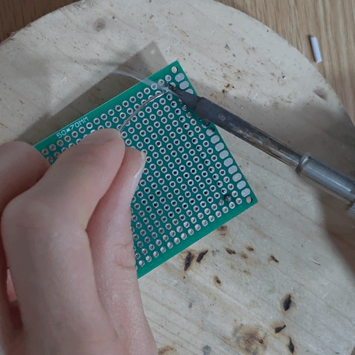
3) 서로 붙은 납(브릿지) 정리
핀끼리 납으로 붙어버린 부분은, 온도가 내려갈 때까지 기다렸다가 긁어서 떼어냅니다. 또는 인두팁에 납이 살짝 묻은 상태로 핀헤더 맨 위에서 가져다 대면, 아래쪽 납땜 부위가 녹으면서 알아서 자리를 잡습니다.
13-header-cleanup.gif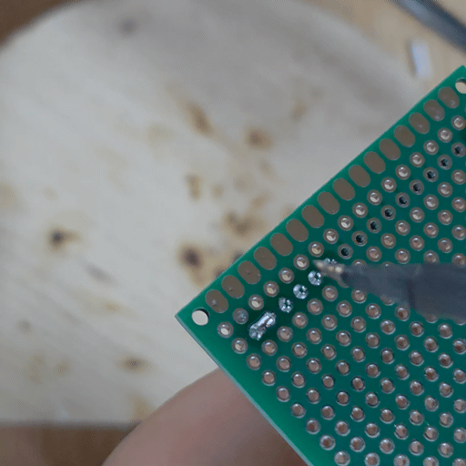
좋은 납땜 vs 나쁜 납땜
좋은 납땜 ○
납이 화산처럼 완만한 원뿔(세모) 형태로 퍼지고, 패드 바닥에 얇게 밀착됩니다.
나쁜 납땜 ✕
바닥과 밀착되지 않고 공처럼 둥글게 방울진 형태(냉납)입니다.
인두 예열이 잘 돼 있고, 팁 관리가 잘 됐고, 납이 좋다면 실패할 수가 없습니다. — 사실 나쁜 납땜 사진을 찍는 게 더 힘들었습니다. 인두기 관리가 잘 돼 있고 좋은 인두기인 데다 유연납을 써서, 일부러 최저 온도로 맞춰놓고서야 겨우 실패한 사진을 얻었습니다.
14-header-compare.jpg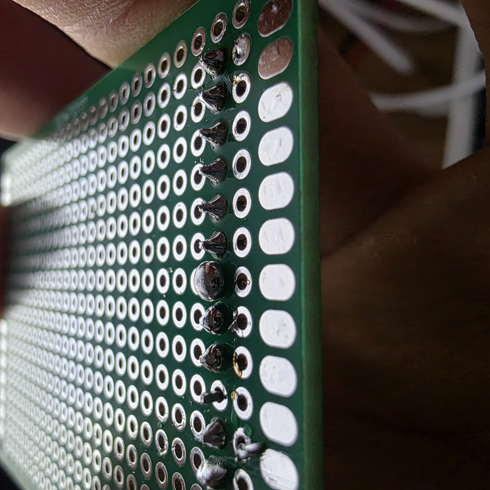
전선을 모듈 단자에 연결하기
방법 A — 가장 쉽고 튼튼함
전선 피복을 벗기고 심선을 꼬은 뒤, 단자 구멍 사이로 통과시킵니다. 인두팁을 전선과 단자 사이에 대고 납땜합니다.
16-wire-through.gif
구멍이 막혔거나 전선이 들어가기엔 좁을 때
단자에 먼저 납을 묻히고, 피복 벗겨 꼬은 전선을 가져다 댄 뒤, 그 위에 인두기를 올립니다. 어느 정도 열이 전달되어 납땜이 됩니다.
17-wire-ontop.gif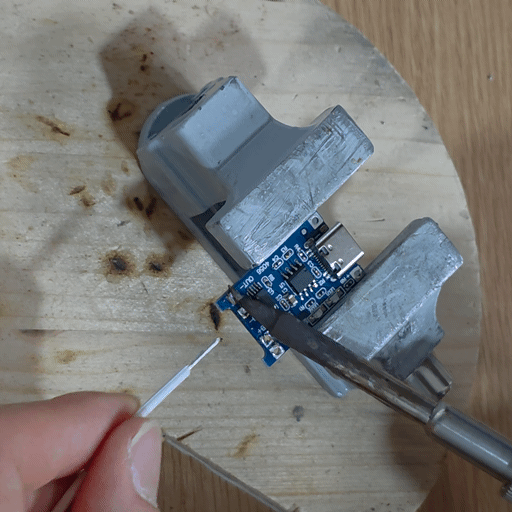
납은 열전도가 매우 좋지만 전선은 열전도가 나빠서, 열이 충분히 전달되지 않아 납땜이 안 되기 쉽습니다. 특히 단자 반대편 전선에는 납이 제대로 묻지 않아 윗부분이 떨어질 수 있습니다.
18-wire-fail.gif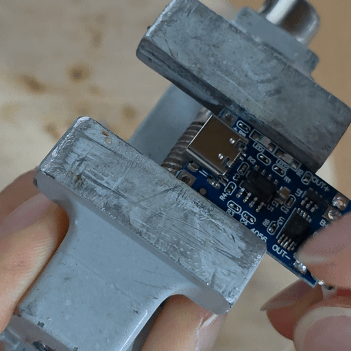
해결책 — 전선 도금(Tinning)
전선을 꼰 후 나무 위에 올려두고, 그 위에 인두팁을 대고 납을 적셔 전선 전체를 납으로 코팅합니다.
19-wire-tinning.gif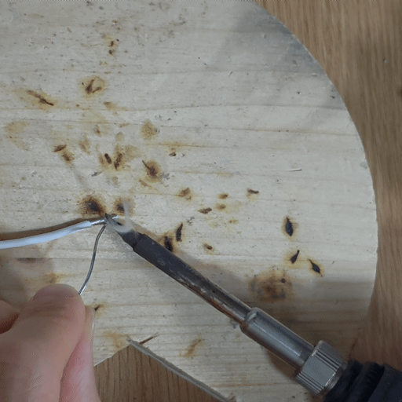
- 도금한 전선으로 단자에 납땜하면, 전선 전체에 납이 있어 열전도가 좋아져 잘 붙습니다.
- 흔들어보면 납땜 부위는 안 떨어지고, 오히려 납이 안 묻은 쪽 전선이 먼저 떨어집니다 — 그만큼 납땜 부위가 튼튼하다는 뜻입니다.
20-wire-shake.gif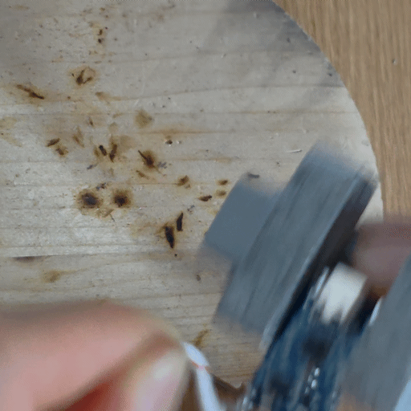
굵은 전선 다루기
굵은 전선에 납을 먹일 때는, 전선에 납을 대고 오래 대고 있어야 속까지 잘 퍼집니다.
21-wire-thick.gif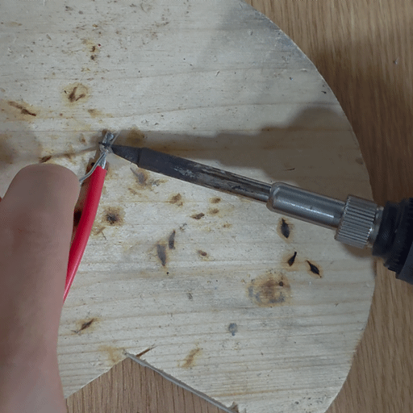
더 굵은 전선 — 플럭스 사용
더 굵은 전선은 납땜만으로는 겉은 될지 몰라도 속까지는 안 될 확률이 높습니다. 이때는 플럭스를 발라야 합니다. 플럭스는 납이 잘 퍼지게, 전선이 납에 잘 젖게 만들어주는 물질입니다. 굵은 전선에 플럭스를 바르고 납땜하면 납이 속까지 잘 퍼집니다.
22-wire-flux.gif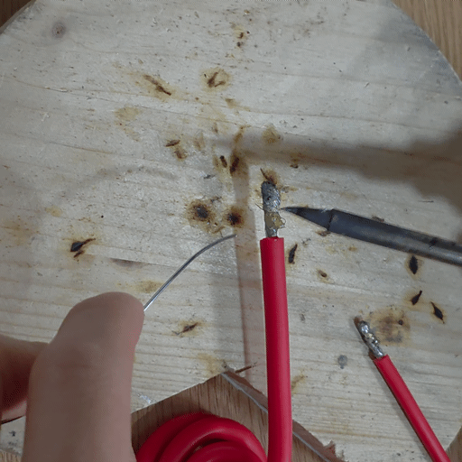
마무리 — 인두팁 관리
- 사용 후에는 팁에 납을 얇게 묻혀두세요(티닝). 팁이 공기 중 산소와 반응해 산화되는 것을 막아줍니다.
- 팁이 검게 산화되어 납이 안 붙으면, 여분의 팁으로 교체하세요. 캡스톤실에 여분의 인두팁이 구비되어 있으니 억지로 쓰지 말고 바로 바꾸는 게 좋습니다.
23-tip-oxidized.jpg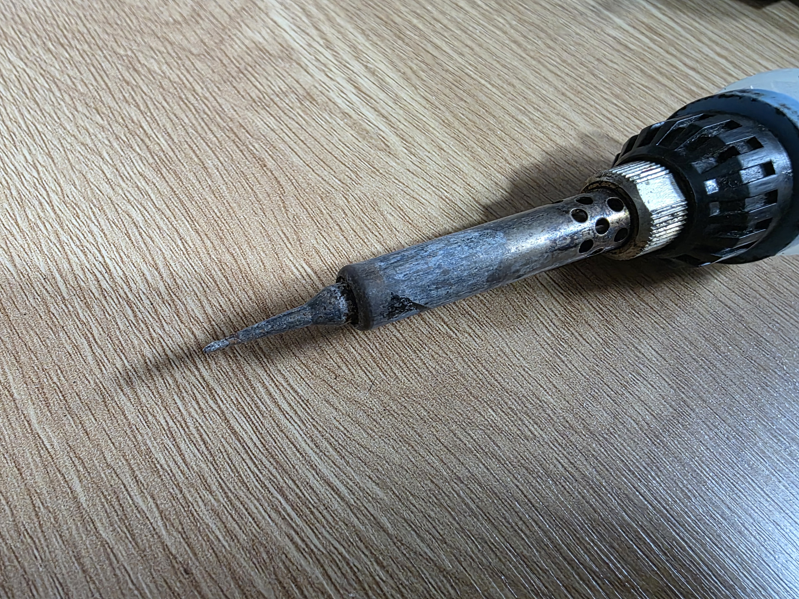
24-tip-removed.jpg